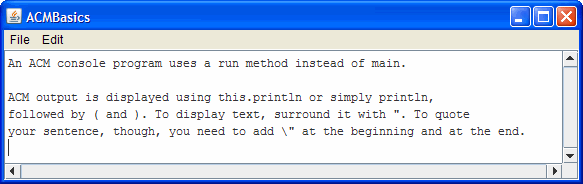

This week you'll concentrate on
simple output programs, using Strings and
escape sequences. You'll write "regular" console programs,
ACM console programs and Java applets.
Here's the list of things you should do this week.
-
Output: Difference: This is a "practice"
exercise to get you ready for the exams. Try this after you've
completed Chapters 1 and 2 to see how much you've absorbed. To
do this exercise, start DrJava (fresh, with no other apps open)
and create a new "regular" console-mode application in the Chapter02 folder.
Name the program Difference. The output of the program should look like this:
 Notice that the purpose of this exercise is to make
sure you know how to use escape sequences in
your output. Notice also that there are five lines
of output and that line 3 is empty.
Notice that the purpose of this exercise is to make
sure you know how to use escape sequences in
your output. Notice also that there are five lines
of output and that line 3 is empty.
Once you have created the program, compile it and run Check to see your score. If you didn't do as well as you thought, check the Solutions page online for some tips that may help you.
-
 Output 2: Spikey: Here is another "practice"
exercise to try for output and escape sequences.
Write a "regular" console-mode program named Spikey that
prints the output shown to the right. (Click image to enlarge.)
Output 2: Spikey: Here is another "practice"
exercise to try for output and escape sequences.
Write a "regular" console-mode program named Spikey that
prints the output shown to the right. (Click image to enlarge.)
As with the previous exercise, the purpose is to make sure you know how to use escape sequences in your output. Notice also that there are six lines of output with Spikey. There are no trailing spaces in the output.
Once you have created the program, compile it and run Check to see your score. If you didn't do as well as you thought, check the Solutions page online for some tips that may help you.
-
 Output 3: HuggyBear: Here is a final "practice"
exercise to try for output and escape sequences.
Write a "regular" console-mode program named HuggyBear that
prints the output shown to the right.
Output 3: HuggyBear: Here is a final "practice"
exercise to try for output and escape sequences.
Write a "regular" console-mode program named HuggyBear that
prints the output shown to the right.
As with the previous exercises, the purpose is to make sure you know how to use escape sequences in your output. Notice also that there are twelve lines of output with HuggyBear. There are no trailing spaces in the output.
Once you have created the program, compile it and run Check to see your score. If you didn't do as well as you thought, check the Solutions page online for some tips that may help you.
The first proficiency quiz will be similar to this problem. You will have one-half hour to complete a similar program.
-
ACM Output: ACMBasics: Here is an
exercise that combines ACM programs,
Stringconcatenation, escape sequences and defining constants. Create an ACM console program named ACMBasics. In therun()method, display the output shown below using one singleprintln()statement.

Of course, that means to display your output, you'll need to use concatenation to create one largeStringliteral, and, to add the line breaks, you'll need to use escape sequences.In addition, add two constants to your program, following the instructions in Chapter 2. Your constants should be named
APPLICATION_WIDTHandAPPLICATION_HEIGHT. Initialize them with the values575and150. If you do it correctly, your console window will be the size shown in the picture here.Once you have created the program, compile it and run Check to see your score. If you didn't do as well as you thought, check the Solutions page online for some tips that may help you.
-
Applet Output: A Dash of Nash:
Try your hand with some graphical output. Use the Web to look up a
short poem by Ogden Nash. Choose a poem with at least four lines,
but no more than 6. Then, create a Java applet named Nash,
using what you've learned this week. Your output should be
similar to this:
 The green line around the picture is just to show you where the
edges should be. Make your applet 300 pixels wide and 200 pixels
high, and center each line, horizontally, inside that area.
The green line around the picture is just to show you where the
edges should be. Make your applet 300 pixels wide and 200 pixels
high, and center each line, horizontally, inside that area.
Leave a "blank" line between the title and the "lines" of the poem. In the bottom right corner, "sign" your applet as I've done here.
You'll have to use "trial and error" to calculate the correct
x,yvalues for each individualdrawString(); there is no "center this line" method. You may, however, want to add the following line at the beginning of yourpaint()method, just to give you a visual reminder of your poem's boundaries.pen.drawRect(0, 0, 300, 200);
When you run your program, the background of the applet will be gray, not white. Next week you'll learn how to change that. There is no Check program for this exercise, but you can follow along on the Solutions page if you get stuck.